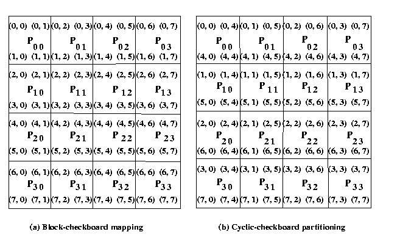

|
hyPACK-2013 : HPC GPU Cluster : NVIDIA CUDA - Health Monitoring
|
|
The research efforts on HPC GPU Cluster are aimed to address some of the challenges with building
and running GPU clusters in Parallel computing environments. The focus is on cluster
architecture, power consumption on each nodes for various work-loads, resource
allocation and sharing as part of management software, health monitoring and data
security, Programming models and applications.
A prototype ideal HPC GPU Cluster should support diffrent heterogeneous programming
features on CPU-GPU acclerators is used for laboratory sessions. The cluster can be
made \93adaptive\94 to the application it is running, assigning
the most effective resources in real-time as per application demands, without requiring
modifications to the
application that is written using different progrmaming is used.
|
|
Example 1.1
|
Write MPI \96 CUDA program to perform device query operation on each GPU of a node
in a HPC GPU Cluster
|
|
Example 1.2
|
Write MPI \96 CUDA program to measure the host-to device bandwidth on each node
with single & mutliple CUDA enabled NVIDIA HPC GPU Cluster
|
|
Example 1.3
|
Write MPI \96 CUDA program to measure the host-to device bandwidth on each node
with single or multiple CUDA enabled NVIDIA HPC GPU Cluster
(Assignment)
|
|
Example 1.4
|
Write MPI CUDA test program to perform synchronous and
asynchronous APIs for performing host-GPU I/O,
overlapping GPU computation and I/O from independent execution streams kernels
in a GPU cluster environment for Matrix-matrix Computations
(Assignment)
|
|
Example 1.5
|
Write a test suite based on GPU device virtualization to execute few
hundred CUDA kernels on HPC GPU Cluster using CUDA wrapper test
(Assignment)
|
|
Example 1.6
|
Write MPI-Pthread-CUDA test Program to perform thread affinity mapping,
to ensure an optimal mapping of GPU to CPU cores in a HPC GPU Cluster
environment (Assignment)
|
|
Example 1.7
|
Write MPI-Pthread-CUDA test Program to demonstrate compute-exclusive mode and
normal mode features in a HPC GPU Cluster environment
(Assignment)
|
|
Example 1.8
|
Write MPI-Pthread-CUDA test Program to demonstrate list of pre-node job allocation
features in a HPC GPU Cluster environment
(Assignment)
|
|
Example 1.9
|
Write MPI-Pthread-CUDA test Program to demonstrate list of post-job de-allocation features in a HPC GPU Cluster environment
(Assignment)
|
| |
Application Kernels & Matrix computations - Benchmarks
|
|
Example 1.10
|
Write MPI \96 CUDA program to demonstrate maximum achieved performance of DGEMM using
CUBLAS libraries
on each GPU of HPC GPU Cluster
(Assignment)
|
|
Example 1.11
|
Write MPI \96 CUDA program to calculate maximum achieved performance of
DGEMM on each node of HPC GPU Cluster using ATALS on host-cpu and CUBLAS
libraries on GPUs
(Assignment)
|
|
Example 1.12
|
Write MPI \96 CUDA program to perform GPU-to-GPU Communication using GPUDirect of NVIDIA
in a HPC GPU Cluster environment for Solution of PDEs by Finite Difference Method
(Assignment)
|
|
Example 1.13
|
Write MPI \96 CUDA program to perform communication among MPI processes using
CUDA 5.0 features
in a HPC GPU Cluster environment for Solution of PDEs by Finite Difference Method
(Assignment)
|
|
Example 1.1: |
Write MPI-CUDA Program to demonstrate device query operation on each node with
single CUDA enabled NVIDIA GPU in an HPC GPU Cluster environment.
(Download source code :
ClusterHomogenity-devicequery.zip
)
|
- Objective
Write a MPI-CUDA program, to demonstrate device query operation on each node with single CUDA enabled
NVIDIA GPU in an HPC GPU Cluster.
- Description
Querying Devices
An easy interface to determine the information such as to find mechanism for
determining
which devices (if any) are present and what capabilities each device supports is
provided.
First, to get count of how many CUDA devices in the system are built on CUDA Architecture
call the API
cudaGetDeviceCount().
After calling
cudaGetDeviceCount(),
then iterate through the devices and query relevant information about each device.
The CUDA runtime returns device properties in a structure of type
cudaDeviceProp.
As of CUDA 4.1 & CUDA 5.0, the
cudaDeviceProp
structure contains the necessary information and
most of the information in
cudaDeviceProp
is self explanatory and commonly used CUDA device properties.
The description of this example rogram (MPI-CUDA) gathers important parameters from each
GPU of a node in a HPC GPU Cluster.
In MPI environment each MPI process initiates device query. Master process with rank 0 gathers
important parameters CUDA device query from each GPU device on each node of HPC GPU Cluster.
The important parameters are printed
-
Input
None
-
Output
Process 0 prints the maximum achieved bandwidth on each H2D, D2H
D2D on each GPU of a each node in HPC GPU Cluster.
|
|
Example 1.2: |
Write MPI - CUDA Program to measure maximum achieved Host-to-Device bandwidth on
each node with single CUDA enabled HPC-GPU-Cluster environment .
(Download source code :
GPUCluster-max-bandwidth.zip
)
|
- Objective
Write a MPI-CUDA Program to demonstrate HPC-GPU-Cluster homogenity and measure maximum achieved host to device band width
on GPUs of HPC-GPU-Cluster .
- Description
The sustainable bandwidth from the host to device (and vice versa) plays a key role in the
acceleration of single DGEMM calls. CUDA offers a fast transfer mode that is
enabled when page-locked host memory (sometimes called pinned host-memory) is used.
A PCI-e transfer from page-able host-memory incurs in an extra copy on the CPU before it
transfers via DMA to the GPU. By using a special memory region, this extra copy can be
eliminated. This special allocation is done using the function cudaMallocHost instead
of a regular malloc.
The bandwidth increases for pageable host-memory low and it creases for pinned memory
on most of the systems. For most of the computations, an asymmetry in the H2D (host to device)
and D2H (device to host) bandwidth exists. The sustained bandwidth is related to the CPU,
motherboard chipset, BIOS setting and the OS. The only way to get reliable transfer speed
is to measure it.
CUDA 5.0 supports regular (pageble) and page-locked host memory and this program performs a
comparison between regular malloc/free calls and page-locked versions
In MPI environment each MPI process initiates query. Master process with rank 0 gathers
important parameters CUDA device query from each GPU device on each node of GPU Cluster.
The maximum sustainable bandwidth values from H2D and D2H on each GPU to respective node
are printed on master process with rank 0. The program uses MPI poit-to-point
communication library calls.
-
Input
None
-
Output
Process 0 prints the maximum achieved bandwidth on each H2D, D2H
D2D on each GPU of a each node in HPC GPU Cluster.
|
|
Example 1.3: |
Write MPI \96 CUDA program to measure the host-to device bandwidth on each node
with single & mutliple CUDA enabled NVIDIA HPC GPU Cluster
|
- Objective
Write a MPI \96 CUDA program, to demonstrate health monitoring of a large homogeneous HPC GPU Cluster using device
query and check GPU memory on GPUs of HPC GPU Cluster
- Description
The sustainable bandwidth from the host to device (and vice versa) plays a key role in the
acceleration of single DGEMM calls. CUDA offers a fast transfer mode that is
enabled when page-locked host memory (sometimes called pinned host-memory) is used.
A PCI-e transfer from page-able host-memory incurs in an extra copy on the CPU before it
transfers via DMA to the GPU. By using a special memory region, this extra copy can be
eliminated. This special allocation is done using the function cudaMallocHost instead
of a regular malloc.
The bandwidth for pageable host-memory is low and it increases for pinned memory
on most of the systems. For most of the computations, an asymmetry in the H2D (host to device)
and D2H (device to host) bandwidth exists. The sustained bandwidth is related to the CPU,
motherboard chipset, BIOS setting and the OS. The only way to get reliable transfer speed
is to measure it.
CUDA 5.0 supports regular (pageble) and page-locked host memory and this program performs a
comparison between regular malloc/free calls and page-locked versions
In MPI environment each MPI process initiates query. Master process with rank 0 gathers
important parameters CUDA device query from each GPU device on each node of GPU Cluster.
The maximum sustainable bandwidth values from H2D and D2H on each GPU to respective node
are printed on master process with rank 0. The program uses MPI poit-to-point
communication library calls.
-
Input
The input to the problem transfer message size
-
Output
Process 0 prints the maximum achieved bandwidth on each H2D, D2H
D2D on each GPU of a each node in HPC GPU Cluster.
|
|
Example 1.4: |
Write MPI CUDA test program to perform synchronous and
asynchronous APIs for performing host-GPU I/O,
overlapping GPU computation and I/O from independent execution streams kernels
in a GPU cluster environment for Matrix-matrix Computations
|
- Objective
Write MPI CUDA test program to perform synchronous and
asynchronous APIs for performing host-GPU I/O,
overlapping GPU computation and I/O from independent execution streams kernels
in a GPU cluster environment for Matrix-Matrix Computations
- Description : CUDA Asynchronous Concurrent Execution
CUDA Runtime supports asynchronous function calls which facilitate concurrent execution
between host and device, some function calls. In execution of these function calls,
the control is returned to the host thread before the device
has completed the requested task. Some of these are:
-
Memory copies between two addresses to the same device memory;
-
Memory copies from host to device of a memory block of 64 KB or less;
Memory copies performed by functions that are suffixed with Async;
-
Memory set function calls.
Asynchronous function calls
A stream is a sequence
of commands (possibly issued by different host threads) that execute
in order. A CUDA represents a queue of GPU operations that get executed
in a specific order. Several operations can be included into a stream
and the order in which operations are added to the stream
specifies the order in which they will be executed. Some of Stream
features are:
-
Creation and Destruction;
-
Default Stream;
-
Explicit Synchronization;
Implicit Synchronization;
-
Overlapping Behavior.
Streams and Async functions provide memocopies (D2H, H2D) asynchronous with CPU
and ability to concurrently execute a kernel and a memcopy.
Application employ single or multiple CUDA Streams. When we use single stream,
at the beginning of application, the computations are divided into chunks and
each chunked computation and the overlap of memory copies with kernel execution.
On multiple streams, different streams will perform CUDA operations as per
application requirements.
Description : Implementation of Matrix-Matrix Multiplication
CUDA Runtime supports asynchronous function calls which facilitate concurrent execution
between host and device, some function calls. In execution of these function calls,
the control is returned to the host thread before the device
has completed the requested task.
In this MPI-CUDA program, for computing the matrix-matrix multiplication
on p processors of IBM AIX cluster using block checkerboard partitioning
of the matrices . Special MPI routines on cartesian topology can
be used for checkerboard partitioning of matrices.
Assume that p= q2 and the size of square
matrices A and B is evenly divisible by q.
Assume that A and B are square matrices of size
n and C be the output matrix. These matrices are dived into blocks or submatrices
to perform matrix-matrix operations in parallel.
For example, an n x n matrix A can be regarded as
q x q array of blocks Ai, j (0<=i
<q, 0<= j < q) such that each block is an (n/q)
x (n/q) submatrix. We use p kernels to implement the
block version of matrix multiplication in parallel on GPU by choosing q
as a square root of p and each kernel computes a distinct block Ci,
j. Block and cyclic checkerboard partitioning of
a 8 x 8 matrix on a square grid (4 x 4) is shown in diffrent way to take
advantage of coalescing and tile partitioning cocepts of CUDA from performance point of
view.

Figure. Checkerboard & Cyclic checker-baord partitioning of 8 x 8 matrices on
16 processes
The matrices A and B are partitioned into p
blocks, A i, j and
B i, j
(0<=i < q, 0<=j < q) of size
(n/q x n/q) on GPU.
These blocks are mapped onto a q x q GPU
mesh of kernels. These kernels are labeled from P0,0
to Pq-1,q-1.
These kernels are launched using Streams and Async function calls.

|
|
Example 1.5: |
Write a test suite based on GPU device virtualization to execute few
hundred CUDA kernels on HPC GPU Cluster using CUDA wrapper test
(Assignment)
|
- Objective
Write a test suite based on GPU device virtualization to execute few
hundred CUDA kernels on HPC GPU Cluster using CUDA wrapper test
- Description
In virtualization, software framework that will allow a single GPU on a "server" system to
serve many clients simultaneously, and each of those clients can have
its own, independent GPU workload. In a simple situation, on one GPU System,
many kernels are allowed to execute on GPU using
GPU device virtualization. The user\92s application sees only
the virtual GPU devices, where one device (ex. device0) is rotated to a
different physical GPU after any GPU device open call. This
is implemented by shifting the virtual GPU to physical GPU
mapping by one each time a process is launched. The
CUDA/MPI cand be used and checker-board paritioning of matrix into matrix
comptuations can be taken to demonstrate the performance.
|
|
Example 1.6: |
Write MPI-Pthread-CUDA test Program to perform thread affinity mapping,
to ensure an optimal mapping of GPU to CPU cores in a HPC GPU Cluster
environment (Assignment)
|
- Objective
Write MPI-Pthread-CUDA test Program to perform thread affinity mapping,
to ensure an optimal mapping of GPU to CPU cores in a HPC GPU Cluster
environment (Assignment)
- Description
On Host-CPU, assinging host-threads to unque GPU, which
is implemented in CUDA Wrapper library. With multi-GPUs,
node containing the optimal mapping of GPU to CPU cores
is important. Also, set process affinity
for the CPU cores \93closer\94 to the GPU being allocated
which can be done using CUDAC wrapper library. In typical
message passing cluster with each node having single or
multiple GPUs, the sustained bandwidth
from the host to device (and vice versa) plays a key role in the
acceleration of computations. The performance depends upon
the host CPU process is running on to achive optimal mapping.
Demonstrate the performance of with and witout proper affinity
mapping to solve Solution of matrix system of linear equations
using POSIX threads and CUDA APIs in MPI environment
|
|
Example 1.7: |
Write MPI-Pthread-CUDA test Program to demonstrate compute-exclusive mode and
normal mode features in a HPC GPU Cluster environment (Assignment)
|
- Objective
Write MPI-Pthread-CUDA test Program to demonstrate compute-exclusive mode and
normal mode features in a HPC GPU Cluster environment for
Solution of matrix system of linear equations
using POSIX threads and CUDA APs
- Description
CUDA support normal and the compute-exclusive mode in a typical multi-threaded
environment. In compute-exclusive mode, a given
thread will own a GPU at first use. Additionally, this mode
includes the capability to fall back to the next device available.
Develop a MPi-CUDA program using normal and compute-exclusive
mode for
|
|
Example 1.8: |
Write MPI-Pthread-CUDA test Program to demonstrate list of pre-node job allocation
features in a HPC GPU Cluster environment
|
- Objective
Write MPI-Pthread-CUDA test Program to demonstrate list of pre-node job allocation
features in a HPC GPU Cluster environment
- Description
Write a MPI-CUDA test suite to perform the following operations in a
HPC GPU Cluster.
-
Detects GPU devices on the allocated node(s)
of HPC GPU Cluster
-
Generate total device list file for HPC GPU Cluster
-
Checkout requested GPU devices from the total device file
-
Test Device Query on each device and check for
homogeneity of HPC GPU Cluster
-
Display of
allocated GPUs on HPC GPU Cluster and integration
with Resource Job Management software
-
Check the available memory on each GPU and match
with resource required for job submission
|
|
Example 1.9: |
Write MPI-Pthread-CUDA test Program to demonstrate list of post-job de-allocation
features in a HPC GPU Cluster environment
|
- Objective
Write MPI-Pthread-CUDA test Program to demonstrate list of post-job de-allocation
features in a HPC GPU Cluster environment
- Description
Write a MPI-CUDA test suite to perform the following operations in a
HPC GPU Cluster.
-
Detects status of GPU devices on the allocated node(s)
of HPC GPU Cluster
-
Run GPU memory test utility against job\92s allocated
GPU device(s) to verify healthy GPU state
If bad state is detected, mark the node offline,
if other jobs present on it.
If no other jobs present, reload the kernel module to
recover the node and mark it on-line again
-
Run the memory scrubber to clear GPU device memory
-
Notify on any failure events with job details
-
Clear CUDA wrapper shared memory segment
-
Check-in GPUs back to the device file
|
|
Example 1.10: |
Write MPI \96 CUDA program to demonstrate maximum achieved performance
of DGEMM using CUBLAS libraries on each GPU of HPC GPU Cluster
|
- Objective
Write MPI \96 CUDA program to demonstrate maximum achieved performance
of DGEMM using CUBLAS libraries on each GPU of HPC GPU Cluster
- Description
Write MPI \96 CUDA program to calculate maximum achieved performance of
DGEMM on each GPU of each node of HPC GPU Cluster and master process with
rank 0 prints the final value.
|
|
Example 1.11: |
Write MPI \96 CUDA program to calculate maximum achieved performance of
DGEMM on each node of HPC GPU Cluster using ATLAS on host-cpu and CUBLAS
libraries on GPUs
|
- Objective
Write MPI \96 CUDA program to calculate maximum achieved performance of
DGEMM on each node of HPC GPU Cluster using ATLAS on host-cpu and CUBLAS
libraries on GPUs
- Description
Demonstrate the performance of DGEMM on a node with single GPU using
sing ATLAS on host-cpu and CUBLAS libraries on GPUs
|
|
Example 1.12: |
Write MPI \96 CUDA program to perform GPU-to-GPU Communication
using GPUDirect of NVIDIA in a HPC GPU Cluster environment for Solution
of PDEs by Finite Difference Method
|
- Objective
Write MPI \96 CUDA program to perform GPU-to-GPU Communication
using GPUDirect of NVIDIA
in a HPC GPU Cluster environment for Solution of PDEs by Finite
Difference Method
- Description
The MPI implementation of solution of PDEs on parallel computers, the one-dimensional paritioning is performed
and each parition is assigned to a unique MPI process.
Using CUDA-5.0, you've to demonstrate the time taken for communication of ghost-points
information from one GPU another GPU on the same node in HPC Cluster.
|
|
Example 1.13: |
Write MPI \96 CUDA program to perform communication among MPI processes using
CUDA 5.0 features
in a HPC GPU Cluster environment for Solution of PDEs by Finite Difference Method
|
- Objective
Write MPI \96 CUDA program to perform communication among MPI processes using
CUDA 5.0 features
in a HPC GPU Cluster environment for Solution of PDEs by Finite Difference Method
- Description
The MPI implementation of solution of PDEs on parallel computers, the one-dimensional paritioning is performed
and each parition is assigned to a unique MPI process.
Using CUDA-5.0, you've to demonstrate the time taken for communication of ghost-points
information from one GPU on a node to another GPU on diffrent node. A comparative analysis
of results using single GPU, multi-gpu, differnt types of gpu-gpu communication should
be carried out.
|
|
|
|
|